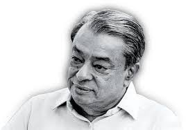

1921
"A person who does not have respect for time, and does not have a sense of timing, can achieve little"
Dr. Verghese Kurien was born on November 26, 1921, in Calicut, Madras Presidency, British India (now Kozhikode, Kerala, India). He hailed from a Syrian Christian family. Kurien completed his schooling in Chennai (then Madras) and went on to earn a bachelor's degree in Physics from Loyola College, Chennai. He then obtained a bachelor's degree in Mechanical Engineering from the University of Madras. Later, he pursued graduate studies in Dairy Engineering at Michigan State University, USA, through a government scholarship.
After returning to India in 1949, Dr. Kurien was assigned to the Government Creamery in Anand, Gujarat, under a bond to serve the government for a few years. Uninterested in the government job, he was soon approached by Tribhuvandas Patel, the founder of the Kaira District Cooperative Milk Producers' Union, to help set up a dairy cooperative in Anand. Kurien accepted the challenge and joined the cooperative, which would later become known as AMUL (Anand Milk Union Limited).
In Anand, Kurien worked tirelessly to build the cooperative, facing numerous challenges. His innovative approaches and relentless efforts transformed AMUL into a highly successful cooperative model, setting new standards in the dairy industry. Kurien's leadership and vision led to the launch of Operation Flood in 1970, the world's largest dairy development program. This initiative aimed to create a nationwide milk grid, connecting rural producers with urban markets, thus eliminating middlemen and ensuring fair prices for farmers. By the end of the program, India had become the largest producer of milk in the world
Dr. Kurien's work had a profound impact on Indian society:
Dr. Kurien was married to Molly Kurien, and the couple had one daughter, Nirmala Kurien. He was known for his humility, dedication, and passion for rural development. Kurien enjoyed reading, gardening, and spending time with his family.
Dr. Kurien received numerous prestigious awards for his contributions, including:
Dr. Verghese Kurien's vision and dedication to cooperative development and rural empowerment left an indelible mark on Indian society. His work continues to inspire cooperative movements and rural development initiatives worldwide. His autobiography, "I Too Had a Dream," provides valuable insights into his journey and the cooperative movement in India.
Dr. Verghese Kurien passed away on September 9, 2012, in Nadiad, Gujarat. His legacy lives on through the countless lives he touched and the transformative changes he brought to the Indian dairy industry and rural development. His education, thoughts, and ideas continue to guide and inspire many.
copyright sakir-shaikh. All right reserved